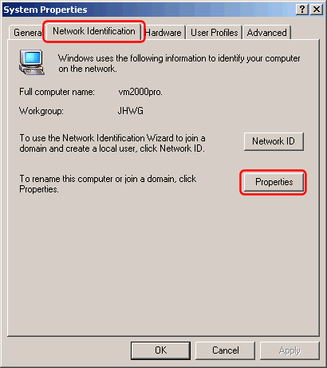
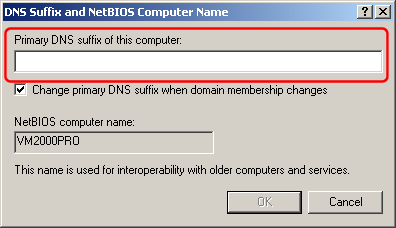

The Windows "Primary DNS suffix" is by default used for resolving unqualified domain names.
In the Windows Control Panel, double-click the "System" icon:
In the "System Properties" dialog, select the "Network Identification" tab and click the "Properties" button:

In the "Identification Changes" dialog, click the "More..." button:

Enter the Primary DNS suffix:
